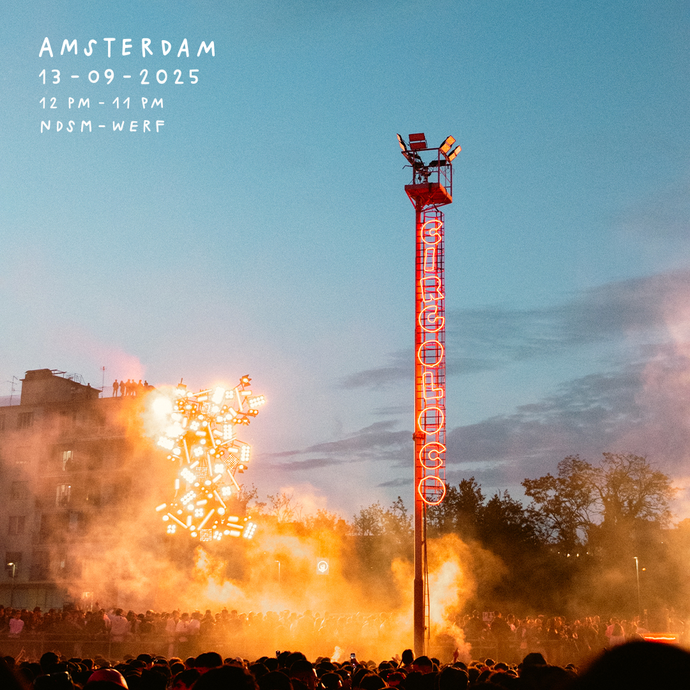
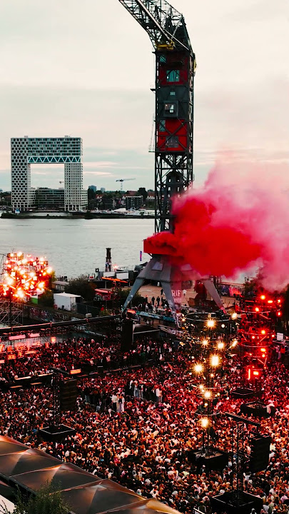
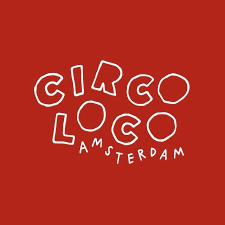

Case study / 2025
Circoloco
Amsterdam
Project overview
Circoloco Amsterdam brought the internationally established Circoloco concept to NDSM-Werf, one of Amsterdam’s major industrial event locations. I worked with Revolution Academy as Check-in Supervisor, managing the show-day flow of crew and volunteers from arrival through to check-out and maintaining direct communication with the Crew Manager throughout the event.
My role
Check-in
Operations.
- Managed crew and volunteer check-in and check-out across multiple shift changes throughout the event.
- Tracked arrivals, ETAs, late arrivals and no-shows, maintaining an up-to-date overview for the Crew Manager.
- Completed arrival administration using the Revolution check-in app, QR scanning and the operational check-in sheet.
- Managed volunteer contracts, crew materials and clothing distribution, ensuring everything was ready before each shift.
- Maintained direct communication with crew members, volunteers, runners, the Entrance Manager and Crew Manager during arrivals and shift transitions.
- Handled accreditation issues, exceptions and operational escalations, documenting relevant information and communicating issues to the appropriate manager.
Project context
The check-in desk acted as the operational connection between incoming crew and the teams already working inside the event. With staff arriving across several shift waves during the day, the role required a continuously updated overview of who was expected, who had arrived, who was running late and whether any planned crew members were no longer available.
Before each shift, I monitored the relevant WhatsApp groups and contacted crew members directly when necessary to confirm their ETA and anticipate delays or no-shows. Once they arrived, I completed the check-in process, handled the required materials and administration, and communicated their arrival to the Crew Manager, Entrance Manager or runner responsible for bringing them to their position.
The same process continued during shift changes and check-out. Maintaining accurate information meant the Crew Manager could react early when staffing changed, while issues such as missing accreditation, unexpected absences or other exceptions could be escalated before they affected the operation.
Experience
Keeping the crew flow visible before it becomes an operational issue.Managing arrivals across multiple shift waves reinforced the value of maintaining a clear overview, communicating early and acting proactively when staffing conditions change.
Gallery
Project material.


